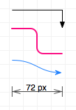

Líneas

Las líneas sirven para establecer asociaciones lógicas entre objetos. Puede crear líneas mediante la herramienta Línea. Cada línea tiene una dirección que va de un origen a un destino pasando por los puntos medios.
También puede utilizar líneas sin conectarlas a ningún objeto. Para que una línea no intente conectarse a un objeto, selecciónela y utilice el inspector Conexiones para desactivar las conexiones.